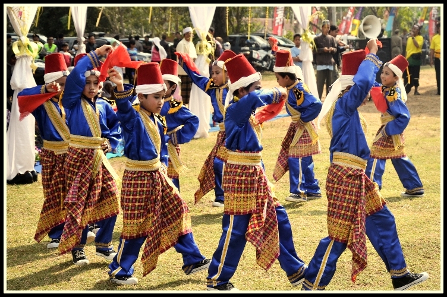
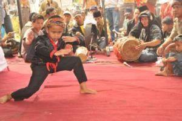
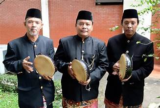
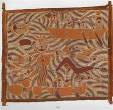

Debus Surosowan
Debus Surosowan adalah salah satu kesenian paling populer dari Banten.
Atraksi ini dikenal tidak hanya oleh masyarakat Banten tetapi juga di
seluruh nusantara. Debus melibatkan penggunaan benda tajam seperti
golok, paku, dan air keras, yang dipadukan dengan kekuatan fisik dan
spiritual para pemainnya. Pertunjukan ini sering kali menunjukkan
kekebalan tubuh terhadap benda tajam dan keras, menciptakan pengalaman
yang memukau bagi penonton.

Rudat
Rudat adalah tarian yang diiringi oleh alat musik khas Banten seperti
ganjring, rebana, dan kecrekan. Musik yang dihasilkan memiliki irama
Arab yang khas dan harmonis, menciptakan suasana yang mempesona.
Tarian ini sering kali dimainkan dalam berbagai acara budaya dan
keagamaan, mencerminkan perpaduan antara seni tari dan musik
tradisional.

Patingtung
Patingtung adalah alat musik yang digunakan untuk mengiringi tarian
pencak silat. Alat musik ini juga dikenal sebagai kendang pencak,
terdiri dari dua buah kendang kecil, satu buah gong kecil, dan sebuah
kulenter. Musik patingtung biasanya ditabuh untuk mengiringi para
pesilat yang sedang memperagakan berbagai jurus tradisional, menambah
kesan dramatis dan menghidupkan suasana pertunjukan silat.

Dzikir Saman
Dzikir Saman awalnya dibawa oleh para ulama yang menyebarkan agama
Islam di Banten. Kesenian ini telah mengalami banyak perubahan,
termasuk penambahan tarian yang mengikuti irama vokal beluk musik
kesenian ini. Nama Saman sendiri berasal dari kata “delapan”, dan
waditra atau alat bantu yang digunakan adalah “hihid”, benda
menyerupai kipas yang terbuat dari kulit kerbau dan rotan, yang
menghasilkan irama ketika dipukulkan.

Ketimpring
Ketimpring adalah alat musik berbentuk rebana dengan jumlah 12 buah,
yang terdiri dari terbang kecil dan besar. Perangkat ini ditabuh
bersamaan dengan lantunan pujian dalam bahasa Arab. Alat musik utama
dalam ketimpring meliputi indung, pancer, penyela, dan penelu.
Kesenian ini sering kali dimainkan dalam berbagai acara keagamaan dan
budaya, memberikan suasana religius dan meriah.

Baca Syekh
Baca Syekh adalah kesenian yang berbentuk pembacaan cerita tentang
kehidupan Syekh Abdul Kadir Zaelani atau Umar Maya. Cerita ini
dibacakan dalam beberapa tahap, dengan setiap tahap diberi penjelasan.
Kesenian ini tidak hanya menghibur tetapi juga mendidik, memberikan
wawasan tentang tokoh-tokoh agama yang dihormati dalam budaya Banten.

Panjang Mulud
Panjang Mulud adalah ritual yang dilakukan untuk memperingati Maulid
Nabi Muhammad SAW. Ritual ini melibatkan pembuatan panjang berisi
berbagai makanan serta telur yang dihiasi dengan kertas krep. Tradisi
ini menggambarkan rasa syukur dan penghormatan masyarakat Banten
terhadap Nabi Muhammad SAW, serta memperkuat ikatan sosial melalui
berbagi makanan.

Mawalan
Mawalan adalah kesenian musik yang menggunakan beberapa buah rebana
dan dimainkan oleh 6-8 orang. Pertunjukan ini biasanya diawali dengan
lantunan ayat-ayat suci sebagai pembuka. Mawalan dapat dimainkan oleh
pria maupun wanita, dan sering kali disajikan dalam berbagai acara
keagamaan, menambah keagungan dan kekhidmatan suasana.

Buka Pintu
Buka Pintu adalah kesenian yang kerap digunakan dalam acara
pernikahan. Ritual ini melibatkan tanya jawab antara perwakilan
mempelai wanita dan pria. Juga dikenal dengan nama Yalil, kesenian ini
bisa dijumpai di berbagai daerah di Banten, termasuk di Kota Cilegon.
Tradisi ini menambah kesan sakral dan meriah pada upacara pernikahan.